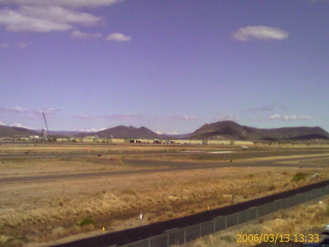
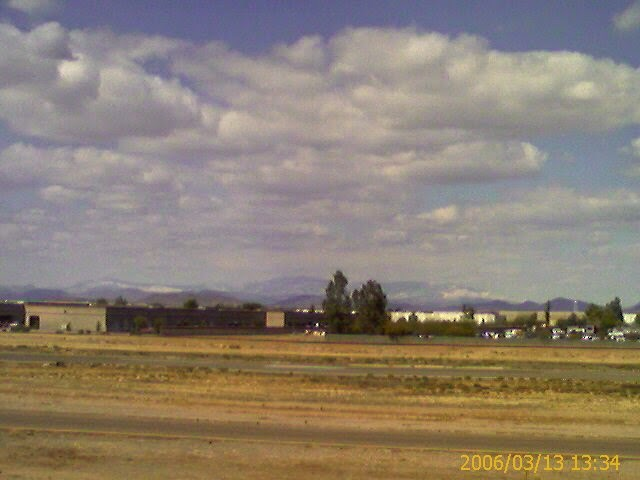
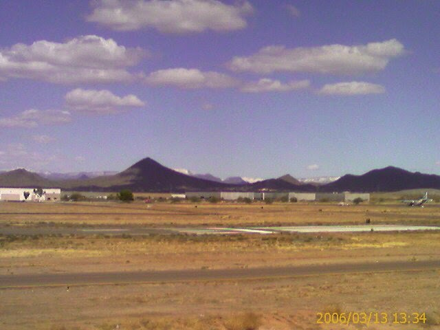

Recovered weblog entry
Snow all around
Long day. Nearly half of it was spent at work, rather than the usual 1/3. That never ceases to strike me as strange; we humans spend eight out of the 24 hours working. I guess it all means something, though.
The reason for the few extra hours today was a deadline that I'm working toward. I've been told that my time management skills could use some work (who am I to argue?) so I'm definitely focused on attaining this. I was only able to finish about 50% of what needed to be done. More tomorrow!
When I drove to work this morning, I traveled on my usual route of the 101 to the 1-17, then exit. But something caught my eye when I curved around the loop toward the 17; snow. It was everywhere. Each mountain range within eye shot was dusted with white. It was absolutely beautiful.
I only wish that I had a camera at that moment. Well, not at that very moment. If I had attempted to take a picture, the results could have been disastrous. Photography and moving automobiles rarely mix, if ever. But I did manage to take these with my camera phone later on in the day. I sincerely apologize in advance for the terrible quality. Truly, these images deserved better justice.



Garbage. You can hardly even see the snow. Anyway, it's there, if you look really hard. If the snow is still there tomorrow, I promise to provide better shots.
You might notice the absence of several links on the Web site lately. It's all in preparation to reintroduce the site near the end of this month. Also, many pages lack important functionality as my new host is making normal operation difficult. My good friend Eric also wishes to blame Microsoft, but that's a given and I feel much better picking on something that I pay for on a monthly basis.
School tomorrow night. Therefore, few, if any, promises are made for an update to Wednesday's blog. School just lays waste to my energy levels, especially after work. At least it's an interesting class. Now, if only I had a text book to use.
Does anyone else think the clover in the banner image is a little big? I do.
Oh, I'm rambling now. Time to end this. Good day to you all!
PS @ 9:54pm There are a lot of ways to get to old defunct areas of this Web site. Do me (and yourself) a favor and don't get too click happy! You might run into an interminable loop!